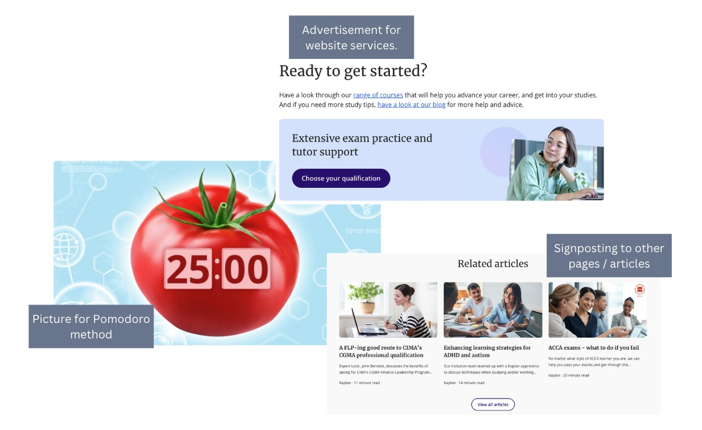

Week 7 Images
Individual Learning
Task 1: The stages of the creative process
So far, in terms of my website topic, I have engaged in steps 1 to 4 of the creative process. The preparation stage involved looking back and noting down everything I have learned in digital media, listing them by what I found most interesting. During the incubation stage, I still wasn’t sure about my topic so I did more research. I evaluated several websites and discussed my ideas with my peer support group. Immediately after this discussion, I had my Eureka moment in the ideation stage where I came up with StudySesh! Since this moment I have been in the evaluation stage where I am gathering all the information I need to create the narrative, text and multimedia elements for my website. This complements what I already know about design thinking because now I am tailoring my plan in relation to the needs and wants of my target audience. In terms of website design, I am still in the preparation and incubation process. Each time I approach a new task, I learn more about what my audience will need. Therefore the production of my moodboard is ongoing.
Task 2: Analyse the use of images on the web
Website 1
Website 2
Website 3
Task 3: Generate a portfolio of images
This collection of images represents the overall theme and stylistic approach of my design. As the purpose is to help university students with studying by delivering information in a clear and concise way, good organisation is key. Therefore, I included images of clean minimalistic and simplistic designs, which also represent the way in which information will be delivered in the website. The image on the bottom right represents the problem and what the audience may be feeling, therefore, establishing an emotional connection. The two including headphones will be used in the audio section of my website, where users can play music while they study. These minimalistic images evoke a sense of focus, which is essential to my audiences need.
Lab Activity
Editing Digital Images


For my alternate methods of optimization I did Greyscale, RGB and Indexed in 600px - 60dpi, 800px - 72dpi, and 900px - 90dpi. I found that these methods of optimization directly impact the image quality. As seen in the subjective fidelity criteria, the quality can range from "Unusable" to "Excellent". Firstly I looked at the Greyscale and Indexed images in comparison to RGB. The Greyscale files are smaller in size compared to RGB as they only use shades of grey rather than storing colour information. This reduction in information will result in faster loading times. Therefore, this would be a good option for when colour is not needed. However, the absence of colour reduces the visual appeal of the images which I think is essential for my website. On the other hand, the Indexed images do have colour and are a smaller file size. While these aspects make it effective for image optimization, there is noticeable difference in quality. The Indexed images are far more grainy and the colours do not blend as well. Based on these findings, I think that RGB would be the ideal choice for my website for high quality colour images. In terms of pixels and dpi, I saw a noticeable difference between the 600px-60dpi image and the 900px-90dpi image. The 600px-60dpi image was less detailed and sharp when viewed in full screen. Therefore, a higher px and dpi would be more suitable. However, an increase in this also means a larger file size.
Therefore, for my website, I need to evaluate the intent of the images I use and assess which image optimization type would be most useful.